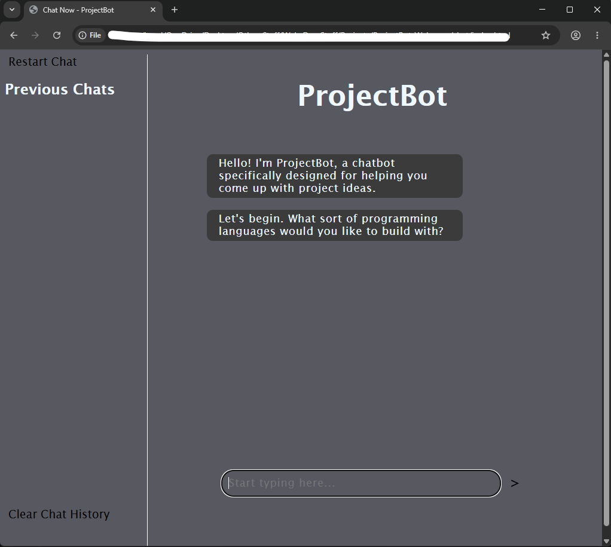
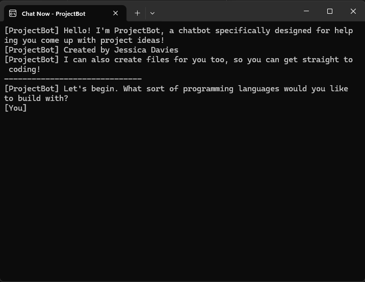

Introduction - What is ProjectBot?
ProjectBot is both a Python and web-based (non-AI) chatbot application for developers to brainstorm interesting coding projects based on a variety of inputs, such as topics and programming languages.
Below is a screenshot of the homepage's web interface.

And below is a screenshot of ProjectBot's Python interface in the Command Prompt.

ProjectBot works by asking you a series of questions about your interests for your ideal coding project. Writing this article, the app asks you the following questions (directly quoted from ProjectBot's code).
"Let's begin. What sort of programming languages would you like to build with?"
"Next up; topics! What sort of topics would you like to work on during your project?"
"And finally; difficulty! How difficult do you want your project to be?"
Why Did I Create ProjectBot?
One issue I find as a developer is being unable to think of new and interesting projects so that I can put my skills to a practical use that solves a problem.
ProjectBot solves this issue by giving a user the opportunities to answer a handful of questions about their interests, and uses keywords from user input to match projects from the database to the user's keywords.
A History
The directory for ProjectBot was first created on the 2nd of May 2026 as a Python application. Originally, it was titled "Coding Project Generator" as the name ProjectBot didn't come to mind at that point in time. Additionally, the idea of converting it to a JavaScript-based web application for users strucked my mind, so I created the directory for this, but didn't touch it until after the Python app was complete 1 week later.
The key difference between the Python and web app is that the Python app allowed a user to choose one of the projects that the bot selected, and to create starter files for your chosen project idea in your chosen languages.
At the current time of writing this article, the Python application does not support chat logging as it's only in the planning stages.
Features
ProjectBot has a range of features, including...
Simple Interface - The interface is made to be as simple as possible for the user, to ensure the focus remains on the chat content itself.
Saved Chat Logs - Chats can be saved to the user's local storage and can be viewed whenever the user wishes, ensuring privacy but keeping a way to save their chats.
Natural Language Processing (NLP) - The bot uses Natural Language Processing for much more accurate results
Conclusion
If you have any feedback for me (which I would love to hear!), all of my contact details can be found on the homepage.
Thank you very much for reading this article, and I hope you enjoyed reading about ProjectBot, and potentially use the application yourself once it releases.
Until next time!